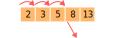

CS3460: Data Structures
Balanced Binary Search Trees
CS3460: Data Structures & Algorithms
Balanced Binary Search Trees
Balancing a BST
- Operations of a BST runs only run efficiently if we keep them balanced.
- There are many ways to modify
insertanddeleteto maintain balance. - Worst-case: keep height $h = O(\lg n)$ at all times guaranteed
- AVL trees, BB[$\alpha$] trees, red-black trees, B-trees
- Randomized: $h = O(\lg n)$ in expectation or with high probability
- Randomly balanced BSTs, treaps
- Amortized: any sequence of $k$ BST operations take $O(k \lg n)$ time
- Splay trees, "batch" re-balancing methods
- Almost all balancing mechanisms are built using rotations
Rotations
- Almost all balancing mechanisms are built using rotations
- Rotations always happen along an edge (i.e., a pair of nodes)
- Each rotation only takes $O(1)$ time including node augmentations!
The "Height-Balanced" Property
- A binary tree is height-balanced if:
- its left and right subtrees differ in height by at most 1, and
- its left and right subtrees are themselves height-balanced
- Can show that height-balanced $\implies$ balanced
- If the number of elements $n$ is at least exponentially correlated with the height $h$ of the tree, then the height of the tree is at most $O(\lg n)$.
- Simply put, if $2^{h} \le n$, then $h \le \lg n$
The "Height-Balanced" Property
- If the number of elements $n$ is at least exponentially correlated with the height $h$ of the tree, then the height of the tree is at most $O(\lg n)$.
- Simply put, if $2^{h} \le n$, then $h \le \lg n$
- Claim: A height-balanced tree of height $h$ contains $n \ge F_h$, where the hth Fibonacci number $F_h = \Theta(\Phi^{h})$, given $\Phi = (1 + \sqrt{5}) / 2$. Therefore, an $n$-element height-balanced tree can have a height of $O(\lg n)$
- Quick proof by induction:
- Consider any arbitrary height-balanced tree of height $h$. Suppose WLOG its left subtree is tallest. By induction, its left subtree contains $\ge F_{h-1}$ elements and its right contains $\ge F_{h-2}$ elements. Total number of elements is $\ge 1 + F_{h-1} + F_{h-2} = 1 + F_{h}$. What about base cases?
AVL Trees
- An AVL tree is a height-balanced tree where every node is augmented with subtree height (not subtree size, but still easily updated after a rotation)
- Described in "An algorithm for the organization of information," a paper by Georgy Adel'son-Vel'skiÄ and Evgenii Landis '62
- After each insertion or deletion, we can restore the height-balance by performing $O(\lg n)$ rotations
Restoring Height Balance after Insert
- After an
insert, walk back up the insertion path and update subtree heights (How?) - Stop at the first node $z$ at which we encounter a height-balance violation (a height imbalance of exactly 2)

Restoring Height Balance after Insert
- Using 1 or 2 rotations, we can rebalance the tree at $z$.
- The height of $z$'s subtree will decrease by 1, returning to its original value, so there is no need to continue visiting the path above $z$.
Restoring Height Balance after Insert
- Suppose we have an imbalance at node $z$ due to an insertion that makes the left subtree of $z$ too tall (without loss of generality).
- Easy case: Insertion into subtree $A$ makes it too tall: rotate edge(z, x)


Restoring Height Balance after Insert

- Harder case: Subtree B too tall. There are two possible subcases.
- In both cases, a left rotation around edge(x, y) brings us back to the previous case, with $A$ being the taller subtree.
- This requires two total rotations to correct.
AVL Trees: Restoring Height Balance after Insert & Delete
- insert(k)
- Insert $k$ like usual at the leaves.
- Walk back up insertion path, updating subtree heights at each node.
- If a height imbalance is found, perform 1 or 2 rotations to fix.
- Can stop after the first imbalance. Tree is balanced.
- delete(k)
- Delete $k$ like usual.
- Walk back up deletion path, updating subtree heights at each node.
- If a height imbalance is found, perform 1 or 2 rotations to fix.
- Continue along entire deletion path. Performs $O(\lg n)$ rotations.
Bounded-Balanced or BB[$\alpha$] Trees
- An $n$-element binary tree is $\alpha$-balanced if:
- its left and right subtrees each contain $\ge \alpha n$ elements, and
- its left and right subtrees are themselves $\alpha$-balanced.
- For any $\alpha < 1/2$, an $\alpha$-balanced tree with $n$ elements has height $O(\lg n)$
- Simple proof: Walk down the tree starting at the root. The number of elements in our current subtree shrinks to $\le (1 - \alpha)$ times its original value in each step, so less than $\lg_{1-\alpha} n$ steps possible.
- Similar to the AVL tree, we can restore the $\alpha$-balance property after insertion or deletion using at most $O(\lg n)$ rotations (if $\alpha < 1 - \sqrt{2} / 2 \approx 0.293$). Further details omitted here.
Red-Black Trees
- A red-black tree is a binary tree that maintains the following invariants:
- Each node is colored either red or black.
- Each element is stored as an internal node in the tree by attaching "dummy" black nodes as leaf nodes.
- A red node can only have black children.
- Every root-leaf path contains the same number of black elements (called the node's black height).
The "Red-Black" Property
- Claim: A red-black tree of black height $h$ contains $\ge 2^h$ elements, therefore the height $h$ can be at most $O(\lg n)$.
- Relatively easy proof by induction on the black height of the tree. Left as an exercise for you...
- The height of a red-black tree is at most twice the black height of its root node, since every red node must have black children.
Maintaining Red-Black Property after Insert
- Insert a new element $e$ like normal, colored red (replace a leaf, new node has two dummy black nodes as children). Will this change the black height?
- What if
parent(e)is black? Wonderful! No violations of the red-black property. Our work is done.
Maintaining Red-Black Property after Insert
- Let's assume
parent(e)is red, which violates Rule #3. - If
uncle(e)is also red, then we can recolor and push the violation up in the tree.
Maintaining Red-Black Property after Insert
- But what if
parent(e)is red, butuncle(e)is black? - Obviously, if $e$ is not a left child of
parent(e), fix that by rotating along the edge between $e$ andparent(e).
Maintaining Red-Black Property after Insert
- But what if
parent(e)is red, butuncle(e)is black? - Finally, simply do a right rotation between
parent(e)andparent(parent(e))and recolor. Et voila!
Maintaining Red-Black Property
- Since our tree is balanced, it takes $O(\lg n)$ extra time to insert a new element, and potentially $O(\lg n)$ work recoloring the tree.
- Deletion involves even more special cases than insertion, but still only takes $O(\lg n)$ extra time (details omitted).
- Many messy cases is the price we pay for maintaining balance at all times to keep all operations $O(\lg n)$ worst-case.
Why Bother with Red-Black Trees?

- Blame Cormen, Leiserson, Rivest, Stein!
- Red-black trees show up in many places.
- Java
- TreeMap, TreeSet, HashMap (How?)
- C++ STL
- map, multimap, multiset
- GNU/Linux
- CFS scheduler,
linux/rbtree.h - Extra property: $O(1)$ amortized writes
B-Trees
- B-Trees don't belong in this slide deck because they aren't binary trees.
- Balancing a B-Tree is a simple process with fewer special cases than a red-black tree.
- One of the main problems with tree data structures a low cache hit ratio. B-Trees have significantly better cache locality.
- This makes them ideal for storage systems like databases and file systems.
B-Trees
- Each node in a binary tree stores $1$ key and each non-leaf node has $1 \dots 2$ children.
- In a B-Tree, each node stores $B-1 \dots 2B-1$ keys and has $B \dots 2B$ children.
B-Trees
- The root is special — it has no lower limits. It could store a single key, if needed.
- $B=2$ is a common special case called a 2-3-4 tree, since each node would have 2, 3, or 4 children.
B-Trees
- All leaves of a B-Tree have the same depth, so the height is $O(\lg_B n)$.
- All operations on a B-Tree (insert, delete, find, pred, succ, min, max, rank, select) can be easily implemented in $O(B \lg_B n)$ time.
B-Trees
- find(k): Scan the root node sequentially to find the appropriate child pointer, then recursively search this child subtree.
- The runtime of this is $O(B \lg_B n)$ worst case
- Assuming $B=O(1)$, this is $O(\lg n)$
B-Trees
- Easy to implement pred, succ, min, and max all in $O(B \lg_B n)$ time.
- Can support
pred(e)/succ(e)andpred(k)/succ(k) - Inexact search + paging through nearby results = range queries
- If we augment nodes in a B-Tree with subtree sizes, we can also support rank and select in $O(B \lg_B n)$ time.
B-Trees
- Insertions and deletions always take place in leaf nodes.
- To ensure we delete from a leaf node, we may need to swap first with our predecessor or successor.
- This is just like with a BST when we delete a node with two children
- One problem: insertion might make a node too large, or deletion might make a node too small!
B-Trees
- You thought you were free from rotations, but we can rotate in a B-Tree!
- Rotations are how elements get donated to or borrowed from a sibling.
- Rotations can be implemented in $O(1)$ time — but $O(B)$ is fine.
B-Trees
- Insertion into a leaf node might overfill the node ($n \ge 2B$).
- If overfull, split the leaf and donate its median element to the parent.
- This might overfill the parent, causing the splits to cascade up the tree.
- Extra element could potentially be donated to a sibling, if possible...
B-Trees
- Deletion from a node might result in too few elements ($n < B-1$).
- Try to fix this by borrowing an element from a sibling (via rotation).
- When could this fail? Siblings too small ($B-1$ elements)
- In that case, join with a sibling (need to steal an element from parent)
- This might give parent too few elements, repeat next level up.
B-Trees - Summary
- Insert and delete both take $O(B \lg_B n)$ total time.
- We can easily preserve simple augmented data like subtree heights or sizes during the process.
- Insert might result in a chain of splits that propagates up the tree.
- If the root is split, this is the only case where a B-Tree can increase in height.
- Delete might result in a chain of joins that propagates up the tree.
- If the root is consumed by joining its two children, this is only case where a B-Tree can decrease in height.
B-Trees
Interesting bit of trivia: a 2-3-4 tree (a B-Tree with $B=2$) is essentially equivalent to a red-black tree!
Randomly-Balanced Binary Search Trees
- Interesting property: Building a BST of $n$ elements inserted in random order keeps the tree balanced with high probability (a stronger claim than "in expectation").
- Same number of comparisons as randomized quicksort.
- Each
insertoperation takes $O(\lg n)$ whp — this means there is a vanishingly small probability thatinsertfails to run in $O(\lg n)$ time. - Additionally:
- Each element will have a depth of $O(\lg n)$ whp
- The entire tree will have height $O(\lg n)$ whp
- The entire tree will take time $O(n \lg n)$ whp to build
Randomly-Balanced Binary Search Tree
- If we build a binary search tree at random on $n$ elements, then with high probability it will be balanced.
- Further calls to
insertanddeletemight unbalance the tree. - Remarkably, we can fix it by doing some carefully chosen random rotations after each
insertanddeleteso the tree is always "freshly randomized". - That is to say, as if the tree had just been randomly built from scratch.
- Even more precisely: within each subtree, each element is equally likely to be at the root.
- This gives us a simple randomized mechanism for keeping a BST balanced with high probability.
Randomly-Balanced Binary Search Tree
- insert(e) (into a $(n-1)$-element tree):
- With probability $1/n$, insert $e$ at the root by
- either insert as normal, then rotate up to the root,
- or use the split operation
- Otherwise (with probability $1-1/n$), recursively insert into the left or right subtree of the root, depending on the value.
- delete(e): replace $e$ with a randomized join of $e$'s subtrees L and R.
- With probability $|L|/(|L|+|R|)$,
join(L.right, R), return L - With probability $|R|/(|L|+|R|)$,
join(L, R.left), return R